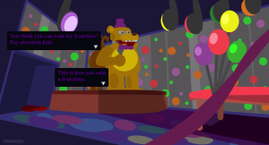
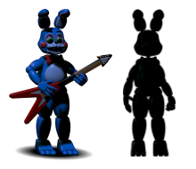

If you see any issues, please do make us aware via our Contact Form.
Thank you for browsing FNaFLore.com, we hope you enjoy the improvements that are coming to the site!
They're not people.
They have no genders. :u

On the Dream Theory, and Understanding its Reasoning
There was a recent discussion on the lore, to which I got a strong reaction from Popgoes as to where the FNaF4 setting took place on the timeline. I wanted to know more, and so got into a discussion.
It became clear that this time inconsistency was due to holding a dream theory, so this discussion became more about understanding the dream theory in the end.
While there are still too many holes in the dream theory for me to accept it, I found the conversation to be very worthwhile. In the hope that someone finds something in this that could solve the lore, here is the log of the discussion.
[17:39:01] Kizzycocoa – Ok, so, perhaps we should start with a brief summary. What do you think happened in FNaF? Where are all the games set in relation to each other?  
[17:40:22] Popgoes – Alright well personally, I do have a stubborn belief of the dream theory, which of course means everything is a dream of the FNAF4 bite victim. This doesn’t mean anything can happen, because it is a dream. It means anything that is shown has an explanation from the child’s past or what he has seen, and not necessarily something that has happened through a timeline of events.
[17:40:51] Popgoes – However, I do have a timeline of what happens WITHIN the dream, and when the events are shown. Like, how the child puts it together.
[17:41:03] Popgoes – Which is pretty similar to a normal timeline.
[17:41:16] Popgoes – I know you’re not fond of the dream concept in general
[17:41:48] Kizzycocoa – The words I have for the theory are pretty concise, yes. But if there’s a story within the theory, it’s something that can still be talked about, I find.
[17:42:01] Popgoes – Okay that’s good. I have a lot to talk about regarding it.
[17:42:24] Kizzycocoa – It’s a lot better to talk with dream theorists when they believe there is a solid story in the dream, rather than “it’s a dream, therefore it’s possible”
[17:42:37] Popgoes – No, I hate that
[17:42:39] Kizzycocoa – But most will just go “dream” at any inconsistency.
[17:42:47] Kizzycocoa – Yeah
[17:43:21] Kizzycocoa – That’s why the site has such a strong stance. But as the book itself exists in a reality-based lore, I feel the games exist as such
[17:43:52] Kizzycocoa – But in any case, we can discuss our theories easy enough. I’d discuss it from a point of reality, you’d do it from a reality within the dream. It’s not actually so incompatible.
[17:43:58] Popgoes – I have never taken the books into account. I feel that World has more of an impact on the story than the book
[17:44:18] Popgoes – Alright, no problem. If you don’t mind me starting, why do you think the purple man is purple?
[17:44:47] Kizzycocoa – I think of two things as potential factors, though as per one of my site’s “Observations”, I’m inclined to one over the other.
[17:45:00] Kizzycocoa – One is light. he is always purple when it is night, yet pink in the daylight.
[17:45:03] Kizzycocoa – It’s a potential theory
[17:45:18] Kizzycocoa – The other, which I believe in more, comes partially from the book, but also the newspaper.
[17:45:46] Kizzycocoa – Pink is when he was disguising himself. Purple is when he let go of the disguise.
[17:46:04] Kizzycocoa – The book basically saying, he got a lot thinner and shallower after he was first caught then released.
[17:46:15] Kizzycocoa – But the newspaper states he gets caught, so there is some crossover.
[17:46:39] Popgoes – You think that’s related to his colour?
[17:46:49] Popgoes – I mean, WHY those colours? Why purple?
[17:47:08] Kizzycocoa – Hmm, that’s an interesting question. I suppose I’d also go for the suit.
[17:47:18] Kizzycocoa – The colour of the uniform itself.
[17:47:36] Kizzycocoa – What do you think, then?
[17:48:06] Popgoes – Shadows, it’s all shadows. Every shadow in the game has a purple colour, or a shade of purple
[17:48:25] Popgoes – In the minigames, I mean. Even in FNAF4, the show stage animatronics give off a distinct purple shadow on the walls
[17:49:04] Kizzycocoa – Hmm, that is true. This would link to the theory of his colour portraying night and day, or in FNaF4’s case, light.
[17:49:09] Popgoes – I believe that the child saw a man put on another employee in a suit, while being out of the light. Which made him look purple. this setting him in stone as a purple man, who stuffs people into suits.
[17:49:22] Kizzycocoa – I see, yes.
[17:49:39] Kizzycocoa – We should probably clarify this quick, what parts of what games do you see as dreams?
[17:50:00] Popgoes – The child has something that has conditionally frightened him, relating to people who are PRETENDING to be the characters. Seeing the purple man help someone become a character, makes him seem bad
[17:50:24] Popgoes – Good question. I see FNAF4 as a nightmare taking place after the child’s bite. FNAF1, 2 and 3 take place before the bite happened
[17:50:42] Popgoes – FNAF4’s minigames is the only part of the series that shows reality
[17:50:46] Kizzycocoa – Wait, three as well?
[17:50:57] Popgoes – Three is 100% part of the dream, yes
[17:51:00] Popgoes – In this theory
[17:51:07] Kizzycocoa – Aaaah, I see. Yes.
[17:52:13] Kizzycocoa – So, fnaf4’s minigames are the only “real” part of this, and the rest of the content exists within the child’s mind?
[17:52:44] Popgoes – Yes, but what he sees is dependant on what happens during his life. Almost everything we see in the main games are actually shown in the FNAF4 minigames
[17:53:04] Popgoes – Or, metaphorically. All of what I have found is very solid though, regarding that
[17:54:13] Kizzycocoa – I see. So, essentially, for the sake of the lore, all content in FNaF 1-4 have a consistent lore influenced by the fnaf4 minigames.
[17:54:34] Popgoes – Yes, exactly. And their order, even the COLOUR scheme of each game, relates to that
[17:54:53] Kizzycocoa – In essence, putting all FNaF content in a little lore bubble, and the FNaF4 minigames in a separate influential bubble.
[17:55:00] Kizzycocoa – I see, ok.
[17:55:13] Kizzycocoa – Well, how does the colour relate? Shall we go to that?
[17:55:55] Popgoes – Well it’s not solid enough to have a discussion
[17:56:53] Popgoes – I can’t remember much about it. But I know that the order of the games shows characters that are more based on fear and less based on child-friendliness, which is showing the child’s development of fear leading up to his anxiety in the fnaf4 minigames
[17:57:53] Kizzycocoa – I see. So it goes 2, 1, 3, 4, and it goes like that as this child is building this story, but getting more anxious as he does so?
[17:58:13] Kizzycocoa – Starting with the toys, ending in the nightmares
[17:58:57] Kizzycocoa – I suppose the lighting does get progressively darker, except in 3 where it becomes more green.
[17:59:27] Kizzycocoa – The games themselves also get progressively creepier as you go along.
[18:00:06] Popgoes – Actually, it’s more that he dreams of FNAF1, then 2, then 3. Gets bitten, has nightmares of FNAF4.
[18:00:21] Kizzycocoa – Oh, so these dreams are before any bite, too?
[18:00:31] Popgoes – The fact that FNAF2 explains FNAF1 is reminiscent of the child understanding his own fears, which actually represents the community
[18:00:59] Popgoes – Yes, FNAF1 2 and 3 are merely normal dreams. FNAF4 introduces human-animatronic hybrids as nightmares
[18:01:14] Kizzycocoa – So, the question becomes then, what order are these dreams in?
[18:02:12] Kizzycocoa – Is it game order, or is it the timeline order?
[18:02:41] Kizzycocoa – And further, what of the dates? Are these dreams a day apart, or years apart?
[18:02:48] Popgoes – Actually, it’s more that he dreams of FNAF1, then 2, then 3. Gets bitten, has nightmares of FNAF4.This is the order of the dreams
[18:02:59] Popgoes – But they are based around a story that he is making up in his head
[18:03:03] Kizzycocoa – Aaah, I see. So he dreams in game-order.
[18:03:11] Kizzycocoa – Ah, yes. Ok. I’ve got you.
[18:03:22] Popgoes – The story, when put together, is of course 2, 4, 1, 3
[18:03:28] Popgoes – Or 4, 2, 1, 3. cant remember
[18:03:44] Popgoes – Yes he dreams in the order of the game’s release
[18:04:05] Kizzycocoa – One or the other. I think 2 itself is an utter mess frankly. It messes with the timeline in so many ways.
[18:04:40] Kizzycocoa – Ok, so, then there’s the question I’ve had on my mind for a while, but wanted to find the best time to ask. What of the night 6 minigame?
[18:04:43] Popgoes – Oh it did a great job
[18:04:47] Popgoes – For which game?
[18:04:51] Kizzycocoa – The one where the child flatlined?
[18:04:54] Kizzycocoa – FNaF4
[18:05:08] Kizzycocoa – What are your thoughts there?
[18:05:14] Popgoes – That physically happens after the whole story
[18:05:18] Popgoes – The good ending of FNAF3 basically
[18:05:22] Popgoes – The lights are out, and so are the plushies
[18:05:40] Popgoes – I think what happens here, is that the brother is talking to him in the hospital, and then he pulls his life support
[18:06:46] Popgoes – https://redd.it/3f7xhh
[18:06:51] Popgoes – Here we go
[18:07:20] Popgoes – Okay so in short, the brother (based on text colour at the time) says I’m sorry, and then immediately afterwards, the plushies fade away and the flatline begins
[18:07:32] Popgoes – Which I personally think is the brother pulling the plug
[18:07:55] Popgoes – With this, we can say that the child survived the bite (to fit the phone call in fnaf1)
[18:08:05] Popgoes – But died in the flatline due to the brother letting him go
[18:08:27] Popgoes – This is mainly to fit with other bits of proof for the FNAF4 minigames showing the bite of 87, which I explain in the rest of the post
[18:09:24] Kizzycocoa – I see. So then, what do you make of the box? It happens after the brother would have been pulled, and supposedly contains the magical key to the lore. What is happening there? Is it a dream? Real?
[18:09:54] Popgoes – Is the box a real thing? I generally don’t delve too deep with that since Scott said it is “the pieces put together”
[18:10:12] Popgoes – Which means it’s not a physical object or something we can look at right now, I’m assuming
[18:10:47] Popgoes – It might be representing the Toy Foxy in the bedroom, or the real Mangle
[18:10:56] Kizzycocoa – I’m personally inclined to think its Mangle
[18:10:59] Kizzycocoa – Yes, same here
[18:12:26] Kizzycocoa – But still, this would be after the plug was pulled. Same with nights 7 and 8. Do you think the timing isn’t important? How could he die, and we still have is content?
[18:13:10] Kizzycocoa – That’s just, what I’m thinking right now. The timing of this box, in relation to the flatline. As well as the other two nights.
[18:13:29] Kizzycocoa – Though I’m more easy to err on those
[18:13:46] Kizzycocoa – “Are custom nights canon?” etc, it’s a big tin of worms there.
[18:13:47] Popgoes – That physically happens after the whole story
[18:13:50] Popgoes – The good ending of FNAF3 basically
[18:13:53] Popgoes – The lights are out, and so are the plushies
[18:14:08] Popgoes – I believe the pulling plug minigame is after everything else. It is not before the rest of what we see in FNAF4
[18:14:14] Kizzycocoa – Ah, I see. Got you.
[18:14:55] Kizzycocoa – Ok, so that’s the general theory. So, we should probably discuss about FNaF4 a bit more.
[18:15:30] Popgoes – Sure thing, go ahead
[18:16:27] Kizzycocoa – Now, Scott made a non-canon version naturally, but he also had some strange design choices. He kept the nightmarionette and nightmare mangle out of the official release, while adding Balloon Boy to both. Many see this as saying the nightmarionette and nightmare mangle not being canon. I suppose the question is, why is this?
[18:17:04] Kizzycocoa – Like, if it is all in his head, why is there a distinction? Or, do you even think there is a distinction to be made?
[18:18:21] Popgoes – I have a direct answer to this actually, thanks for bringing it up
[18:18:50] Popgoes – https://redd.it/3ro7dj
[18:19:02] Popgoes – Okay so
[18:19:28] Popgoes – Yes, Nightmarionne and Nightmare Mangle are non-canon. This is because there are no humans that the FNAF4 child sees that are dressed up, or pretending, to be those characters
[18:19:40] Popgoes – We don’t see anyone with a puppet mask, or anything resembling a Mangle costume
[18:20:05] Popgoes – But we see a man in a Fredbear suit, we see the four bullies, and we see a boy dressed up like BB who holds a balloon and says “Ha ha!”
[18:20:24] Popgoes – The child has seen a man dressed up in a suit kill children. Possibly his friends, a relative, something like that
[18:20:34] Popgoes – This is based on “don’t you remember what you saw” or whatever the quote was
[18:20:48] Popgoes – So he is conditionally frightened of humans wearing things that look like his “friends”
[18:21:03] Popgoes – Because it is seen as a form of manipulation, a way to lure children, to kill
[18:21:20] Popgoes – Plushtrap is NOT a nightmare. The nightmares have these distinct features:
[18:22:08] Popgoes – -Obscure/glowing eyes
[18:22:11] Popgoes – -Five sharp fingers
[18:22:14] Popgoes – -Razor teeth
[18:22:16] Popgoes – https://redd.it/3rtnk0
[18:22:48] Popgoes – I go through each Nightmare here to prove that. Plushtrap doesn’t fit the bill, and instead he resembles the size, colour, and shape of the REAL plush Spring Bonnie which the child holds in the FNAF4 minigames
[18:22:56] Popgoes – He is the dream within the nightmare.
[18:23:07] Popgoes – Oh and he doesn’t have “nightmare” in his name, of course.
[18:23:42] Popgoes – Five fingers, breathing, and being inside a house. These are things that humans do, not animatronics. It’s obvious that the child has merged the fears together. Do you see?
[18:25:35] Kizzycocoa – I suppose, but then there’s BB. how does BB get involved then? BB isn’t seen by this kid at all.
[18:26:03] Kizzycocoa – Also don’t worry, I’ll get the links in there. get them all formatted properly!
[18:26:25] Popgoes – We see a boy dressed up like BB who holds a balloon and says “Ha ha!”
[18:26:45] Popgoes – BB isn’t seen by the kid, that’s right. But neither is Foxy, neither is Freddy.
[18:26:58] Popgoes – He sees people, who are dressed up AS the characters
[18:27:10] Kizzycocoa – Well, he has the TV and the plushies. he has a fixation of the plushies in the nightmare segments
[18:27:18] Kizzycocoa – But then, where does BB come from?
[18:27:29] Popgoes – BB is as existent as the other toys
[18:27:39] Popgoes – We see the Toy Chica, Toy Bonnie, Toy Freddy figurines
[18:27:44] Popgoes – He has a Mangle toy IN HIS HOUSE
[18:27:51] Popgoes – There is no way he doesn’t know about BB
[18:28:08] Popgoes – The child saying “Ha ha!” isn’t a coincidence, I assure you
[18:28:34] Kizzycocoa – Hmm, I suppose we’d need to go into who BB is. Is he a toy, or something different?
[18:28:52] Kizzycocoa – Because if we think back to that girl’s collection, she says she has a complete collection of toys
[18:28:56] Popgoes – He is a toy animatronic. The dream theory still allows the FNAF2 location to exist
[18:29:04] Kizzycocoa – Obviously, there is no Mangle. but there’s also no BB.
[18:29:41] Kizzycocoa – I mean, personally I don’t think BB is a toy
[18:29:54] Popgoes – She says she has a complete collection of toysNo she doesn’t actually
[18:30:02] Kizzycocoa – I’ve said on the site, there’s some proof hinting that he exists before FNaF2
[18:30:04] Popgoes – She says “Why are you crying? Don’t you like my toy collection?”
[18:30:08] Popgoes – She never says she has all of them
[18:30:17] Kizzycocoa – …hmmm, I see.
[18:30:29] Kizzycocoa – Why did I think whole collection. hmm.
[18:30:30] Popgoes – We know for a fact that Nightmare BB is canon, meaning he exists in the real world in some form
[18:31:05] Kizzycocoa – actually, that might be Matpat’s videos, saying she has a complete collection.
[18:31:32] Kizzycocoa – Nevermind, mis-remembering that. You get so little for FNaF4, you tend to cling to what you can
[18:32:13] Kizzycocoa – Ok, so still, I find it odd that we never see any BB animatronic myself.
[18:32:52] Kizzycocoa – Like, Scott even managed to worm Mangle into it in the least ceremonious way possible. Why not BB?
[18:33:17] Kizzycocoa – Not really something that can be answered, I suppose. not without Scott.
[18:33:38] Kizzycocoa – still I can see the theory. Read both of those articles myself.
[18:34:04] Popgoes – Thanks. I don’t know why we don’t see BB as a figurine or animatronic, there’s no real answer to that
[18:34:16] Popgoes – We also don’t see the Puppet, we don’t see Nightmare, we don’t see the Shadows
[18:34:29] Popgoes – We see things that might represent them, obviously. That’s why we have the BB kid
[18:34:34] Kizzycocoa – Why do you suppose Spring Bonnie doesn’t appear?
[18:34:49] Popgoes – Because canonically, he never sees someone looking like him
[18:35:00] Kizzycocoa – He does. the one Purple Guy puts into a suit.
[18:35:08] Popgoes – The easter egg is the best we’ve got, but the child doesn’t see it in a normal playthrough
[18:35:53] Popgoes – That’s like saying the child can control his dreams because of the 20/20/20/20 mode, or that he never actually sees nightmares, because you can play the game without progressing in the beginning mingiame
[18:36:03] Popgoes – In the default gameplay, he doesn’t see them
[18:36:18] Popgoes – All the other characters are shown in the path that you need to take. even the bb kid
[18:37:06] Kizzycocoa – I suppose, I’d just expect him to take notice of the second character on stage, if it is all his dream. He dreams about some kid with a balloon on the sidewalk, but not the giant robot bunny next to the giant robot bear.
[18:37:16] Kizzycocoa – It seems a bit strange, in that context.
[18:37:20] Popgoes – Yes, because he doesn’t see anyone in that suit
[18:37:31] Popgoes – He is scared of the man in the fredbear suit, even in the minigames
[18:37:36] Popgoes – Like, he runs away from him
[18:37:43] Popgoes – That’s where the nightmares of him come from
[18:37:59] Popgoes – The easter egg back room easter egg which is almost impossible to get, isn’t the same
[18:38:14] Popgoes – The two robots on stage don’t trigger any fears. He walks up to them just fine
[18:38:35] Kizzycocoa – He doesn’t go to the stage at all, he’s terrified of them.
[18:38:45] Kizzycocoa – He won’t let you get near the stage.
[18:38:51] Popgoes – Ah, i’m thinking of the figurines. What the fuck am I on about
[18:39:06] Popgoes – Yeah, no, I know. He’s scared of that area because it’s where the kids were killed I believe
[18:39:19] Kizzycocoa – Woah, wait, what?
[18:39:24] Popgoes –
[18:39:42] Popgoes – This kind of thing. I think it’s where they were lured
[18:39:53] Kizzycocoa – Nice image.
[18:40:10] Kizzycocoa – Like, the minigame kid does talk of the kids going missing, and that they get stuffed.
[18:40:14] Popgoes – The dream theory doesn’t say “kids were never killed” by the way. What do you think the child saw that made him terrified of humans wearing suits?
[18:40:21] Popgoes – Yes, of course
[18:40:27] Kizzycocoa – But if FNaF1-4 are a dream, where were the kids stuffed?
[18:41:45] Popgoes – WHERE? Again, the locations still exist. FNAF2’s location and the FNAF4 location physically NEED to exist
[18:41:49] Popgoes – So, in one of those.
[18:42:08] Popgoes – I believe the child saw some event within the fnaf4 location, which is why he’s scared of stuff there
[18:42:36] Kizzycocoa – I see. so, how many children do you think were murdered, and in what locations?
[18:42:49] Kizzycocoa – Do you think the minigames that show the dead kids are correct? or, imagined?
[18:53:30] Kizzycocoa – I mean, if we do look at some of the games, it is very specific. there are 5 kids strewn around the FNaF2 location. Is this the situation, perhaps?
[18:59:25] Popgoes – 5 kids were killed
[18:59:40] Popgoes – We see them repetitively because of the dreams
[18:59:49] Popgoes – Like, literally, we see the same five kids
[19:02:17] Kizzycocoa – I see. From there, I find a small issue. The kids were stuffed into the FNaF1/withered suits, but we see them in the FNaF2 location in the minigames. assuming the lore within the entire series is consistant and doesn’t contradict, wouldn’t this imply more?
[19:02:37] Kizzycocoa – Or, do you think, much like how Scott deviated from canon in TSE, that this is a storyteller’s slip-up?
[19:03:26] Popgoes – The dream theory never proves that any kids were stuffed
[19:03:38] Kizzycocoa – Well, the FNaF2 minigames do
[19:03:40] Popgoes – The child makes up the newspapers and phone calls based on the theories of the child
[19:03:50] Popgoes – The FNAF2 minigames are a part of the dream
[19:03:50] Kizzycocoa – I know it’s a dream
[19:04:04] Kizzycocoa – But, even in a dream, there seems to be multiple dead children, still
[19:04:11] Popgoes – That is, again, based on the child outside the building
[19:04:18] Popgoes – 5 kids were killed
[19:04:20] Popgoes – We see them repetitively because of the dreams
[19:04:22] Popgoes – Like, literally, we see the same five kids
[19:04:23] Popgoes – Yes of course, there were multiple dead children
[19:04:30] Popgoes – But they were not stuffed
[19:04:31] Kizzycocoa – So, in the dream, there are more dead kids than in real life?
[19:04:46] Popgoes – No, the dream theory has 5 dead children. that is it
[19:04:50] Popgoes – The timeline theory has 17 I believe
[19:05:12] Kizzycocoa – I think it’s around 11-12
[19:05:16] Kizzycocoa – Roughly.
[19:05:34] Kizzycocoa – Still, I can get behind 5 dead kids in the dream theory
[19:06:10] Kizzycocoa – But in that dream theory’s timeline of the dream, there are 5 kids killed in FnaF2’s location, but also in the previous location left to rot.
[19:06:13] Kizzycocoa – Thoughts there?
[19:07:05] Popgoes – What makes you think that 5 kids were killed in the fnaf2 location?
[19:07:17] Kizzycocoa – The FNaF2 minigames.
[19:07:22] Kizzycocoa – Though to be clear
[19:07:26] Kizzycocoa – I mean killed in the dream
[19:07:29] Popgoes – The minigame showing the corpses of the children is the child dreaming of the restaurant, with the dead children infesting the memories
[19:08:29] Popgoes – Yes. The minigames which you see the dead children in, are not actually showing an event with dead children
[19:08:39] Kizzycocoa – Huh?
[19:08:47] Popgoes – The Go Go Go minigame is merely three sets of foxy walking to normal, alive children
[19:08:57] Kizzycocoa – Wait, three?
[19:09:02] Popgoes – This minigame takes place in the mind of the victim who has seen five children die
[19:09:09] Popgoes – Have you played the go go go minigame…?
[19:09:14] Kizzycocoa – But, in the last one the children are seen as dead
[19:09:15] Kizzycocoa – Yes
[19:09:16] Popgoes – You control as Foxy three times
[19:09:21] Popgoes – Right yes yes, listen
[19:09:30] Popgoes – You play as Foxy, and you move to the children.
[19:09:41] Popgoes – This is showing Foxy walking to alive, happy children
[19:09:44] Popgoes – HOWEVER
[19:09:58] Popgoes – Because this minigame takes place in the child’s mind, and he has seen five children die
[19:10:06] Popgoes – The minigame CHANGES to show five dead children
[19:10:11] Popgoes – It’s like turning the dream into a nightmare
[19:10:20] Popgoes – There was never five children dead next to Foxy
[19:10:26] Popgoes – They were always alive
[19:10:45] Kizzycocoa – So, you’re saying he’s seeing five dead children everywhere, and their appearance has no relevence in any timeline sense to events within the dream?
[19:10:46] Popgoes – But the scene, the entire event which is shown, is corrupt by the child’s sighting of dead children
[19:10:52] Popgoes – EXACTLY
[19:10:55] Popgoes – Yes, yes yes
[19:11:13] Popgoes – Everything referring to five dead children is a total fabrication, based on him seeing five REAL dead children
[19:11:35] Popgoes – It’s not five children, then five different children, then five children AGAIN. It’s all the same set, and they are appearing because of the sighting.
[19:12:12] Popgoes – The puppet “giving gifts” to children, is actually happening in a real life situation. He’s giving boxes to kids, and they they are opening them up to get masks to wear.
[19:12:21] Popgoes – But the kid makes up a scenario that makes it twisted
[19:12:31] Kizzycocoa – I see. it’s an interesting take on it. I’ll personally raise my hands in the air, I didn’t expect the theory to go in this kind of direction. But ok, I can go along with it.
[19:12:32] Popgoes – “Gifts” are now souls, and “masks” are now animatronic suits
[19:12:43] Popgoes – Ah well that makes it more fun
[19:12:56] Kizzycocoa – so, who do you think the Puppet is to the child? we also see him die alone, seperate to the 5 kids
[19:13:00] Popgoes – Why does the Puppet put masks on the children, if they are actually stuffed into suits? Doesn’t make sense
[19:13:13] Popgoes – The Puppet is a completely made up character
[19:13:28] Popgoes – He doesn’t exist as an animatronic, he doesn’t exist as a soul, he doesn’t exist as an alive child
[19:13:49] Popgoes – Everything we see regarding him is within the dreams that happen before the child’s bite incident
[19:14:13] Popgoes – He’s made up to fuel the story that the child has made for himself
[19:14:25] Popgoes – I had an explanation for his appearance and the drive-by scene, but I’ve forgotten it
[19:15:18] Popgoes – He doesn’t appear in the FNAF4 minigames for a reason. He’s not canon for a reason
[19:16:52] Kizzycocoa – I see. Why do you think he was designed to look the way he does? he’s very off-tone to his toy counterparts. Why is this so?
[19:17:29] Kizzycocoa – I mean, he does look like a crying child in a lot of ways
[19:17:55] Kizzycocoa – but for the “hero” of the story, he does seem to be the strangest of the bunch. he doesn’t have any hero quality to his, visually.
[19:17:58] Kizzycocoa – thoughts?
[19:18:17] Popgoes – Ah… hold on
[19:18:22] Popgoes – I think I remember something here
[19:18:38] Popgoes – Okay so, The Puppet never existed. He’s called “The Puppet”, but he acts like the Puppetmaster
[19:19:08] Popgoes – He’s the Puppetmaster in the child’s story, right? He gives life, he saves people, he can “move anywhere”, and the Phone Guy is scared of him
[19:19:23] Popgoes – But his design looks like a marionette or sockpuppet
[19:19:28] Kizzycocoa – yes. He’s much like the Flumpty of the story.
[19:19:35] Kizzycocoa – except not as evil.
[19:19:55] Popgoes – So maybe it represents lying? The fact that he is the Puppet, but instead of being controlled, he is the one in control
[19:19:58] Popgoes – I’m clueless honestly
[19:21:21] Kizzycocoa – yeah, the puppet makes very little sense in all theories. why would a company group a puppet into their animatronic shows, or for dreams, why does the Puppet look so, strange.
[19:22:04] Kizzycocoa – but in the dream theory you’re proposing, the design is more interesting to look at.
[19:23:51] Kizzycocoa – So, there is a line in FNaF, one that’s seen throughout. “IT’S ME”. it’s iconic of the first location in general, but doesn’t seem to have any connection to the second or third locations. Do you have any thoughts there?
[19:24:34] Popgoes – It’s simply the bite victim realising that he is the one that Phone Guy talks about when mentioning the bite of 87
[19:24:53] Popgoes – Same reason as to why the crying children appear on the same wall as the “it’s me” hallucinations
[19:24:55] Kizzycocoa – Ah, that’s a thought.
[19:24:59] Popgoes – It’s representing himself
[19:25:04] Popgoes – He’s in the dream, almost become lucid
[19:25:07] Kizzycocoa – in this timeline, FNaF1 is waaaaay before any bites, correct?
[19:25:11] Kizzycocoa – like
[19:25:15] Kizzycocoa – as it’s being dreamed
[19:25:23] Popgoes – Yes, it’s being dreamed before the bite happens
[19:25:33] Popgoes – He’s scared of Fredbear’s teeth because of this dream
[19:25:33] Kizzycocoa – So, what’s happening there? how is he pre-emptively making himself the bite victim?
[19:25:39] Popgoes – He believes he’s going to be bitten
[19:25:43] Popgoes – Yes, exactly
[19:26:15] Popgoes – The dream takes place in the future, naturally, since it refers to 1987 as the past, and the kid needs to die in 1987
[19:26:48] Popgoes – so yeah, he’s “predicting” his own future. It’s more that, he has spoken to his brother about his “bite of 87” dreams, and then the brother uses it to scare him with the kiss
[19:26:51] Kizzycocoa – I’m just wondering, why does he have this strong thought that he is going to be bitten? is that addressed?
[19:27:40] Popgoes – No, the event of the Bite of 87 appearing in the first dream is not for any particular reason. He might have misheard something in the real world
[19:27:55] Popgoes – But as far as I know, it’s something he made up, which became real because his brother abused it
[19:28:34] Kizzycocoa – I see. and the “IT’S ME” is him saying he is the victim? but, why then is it only in FNaF1’s location?
[19:28:43] Kizzycocoa – Surely then, it would be in the FNaF2 location?
[19:29:12] Popgoes – It’s in the FNAF2 minigames right?
[19:29:27] Popgoes – I think he starts to dread other things at that point. It’s when he starts overthinking the purple man
[19:29:30] Kizzycocoa – no, it’s only in the FNaF2 “dream” segments.
[19:29:44] Kizzycocoa – which take place in the FNaF1 location
[19:29:55] Popgoes – With the puppet, right
[19:30:05] Kizzycocoa – yes
[19:30:21] Popgoes – And we know the Puppet was never in that location, further proves that he’s a manipulated character
[19:30:35] Popgoes – I don’t know why “it’s me” is never shown in the fnaf2 location
[19:30:47] Popgoes – I don’t think anyone even knows what “it’s me” is. So at least I’ve explained THAT part of it
[19:31:21] Kizzycocoa – Yes, I just wonder, why is it locked to the FNaF1 location in the dream theory, if there is yet an answer or theory on that
[19:31:38] Popgoes – Oh well that’s because it’s when the phone call mentions it
[19:31:49] Popgoes – The “it’s me” is a reply to that
[19:32:11] Popgoes – It’s him listening to his own thoughts, and thinking “oh god, what if there will be a bite in 1987? what if it’ll be me?”
[19:32:34] Popgoes – I guess. It’s not a big part of the dream theory, but that’s what makes sense for me. I don’t think timeline theorists actually have an explanation
[19:34:02] Kizzycocoa – I see. I can kinda see how that would work. My theory there is it’s where all the child murders occured, in particular the Puppet and the 4 dead children. It’s probably more tied to the Puppet in the timeline theory.
[19:35:25] Popgoes – Four dead children? Isn’t there always five?
[19:35:31] Kizzycocoa – I’m just trying to see every base covered in this dream theory, in part to see where it will lead. because you made a strange case for me, which was that FNaF4 took place after FNaF2. So I wanted to get as much information as I could, to refer to it.
[19:35:31] Popgoes – Where do you get four from?
[19:35:35] Kizzycocoa – Five, yes. sorry.
[19:35:39] Popgoes – Ah, gotcha
[19:36:03] Kizzycocoa – though that brings up a thought. In game, there are bare endoskeletons. two of them. are they haunted?
[19:36:13] Popgoes – No, nothing is haunted
[19:36:14] Kizzycocoa – in the context of a dream, for your lore I suppose
[19:36:17] Popgoes – Oh right
[19:36:31] Kizzycocoa – because in FNaF1, there are 5 kids killed
[19:36:35] Popgoes – They represent the endoskeletons that were in the back room
[19:36:43] Popgoes – When he was trapped in there. Night 4 minigame I believe
[19:36:45] Popgoes – of FNAF4
[19:36:54] Popgoes – Same thing with Golden Freddy
[19:36:58] Kizzycocoa – freddy, foxy, chica and bonnie. then there’s golden freddy. but then, there’s the endoskeleton.
[19:37:06] Popgoes – He’s based on the headless golden suit in the back room
[19:37:16] Popgoes – He’s got no endo head, but he has endo body, because of that
[19:37:22] Kizzycocoa – that’s something I’d like to know, too. why is Golden Freddy a thing? why not just, Fredbear?
[19:37:46] Popgoes – Fredbear is a real character that existed. Golden Freddy never existed. He is, again, based on the headless golden character in the P&S room
[19:38:20] Kizzycocoa – Yes, but why does he exist in the first place? in this dream lore, freddy and friends exist, but why not simply use Fredbear instead of Golden Freddy?
[19:38:36] Kizzycocoa – also yes, his head is missing, but to memory, the bow tie should still be there
[19:38:39] Popgoes – Because he doesn’t want to see his friend without a head
[19:38:42] Popgoes – No, it’s not
[19:38:43] Kizzycocoa – I’ll check my files quick
[19:39:15] Kizzycocoa – just seen it, yeah. no bow tie
[19:39:31] Popgoes – Right. So he makes his own character, that is unrelated to Fredbear. It’s just Freddy
[19:39:39] Kizzycocoa – yet, Fredbear does. that’s strange.
[19:39:51] Popgoes – But golden, of course. he makes up any excuse to make sure he doesn’t see his friend without a head
[19:39:57] Popgoes – And he doesn’t dare turn around twice to look at him
[19:40:09] Popgoes – Same reason why in FNAF2’s minigames, Golden Freddy doesn’t wear a hat AT ALL
[19:40:31] Popgoes – It’s him avoiding thinking about it. “It can’t be my friend, it can’t be my friend. It must be Freddy. Please let it be freddy”
[19:40:35] Popgoes – so he makes him freddy.
[19:40:48] Popgoes – That’s just what I think. It’s probably totally wrong. It takes a lot of assumption
[19:40:54] Kizzycocoa – of course though, this means that on night 3(?) of FNaF4’s minigames, he sees this character that’d go on to be Golden Freddy, but he made up Golden Freddy for FNaF1. so, what’s going there?
[19:41:26] Kizzycocoa – I mean, perhaps this has happened before, but do you think this event directly leads to his creation?
[19:41:30] Popgoes – He never dreams of Fredbear in FNAF1, 2, and 3. Is that what you’re asking?
[19:41:59] Popgoes – I believe him being trapped in the back room is what caused the hallucination of Golden Freddy to appear
[19:42:12] Kizzycocoa – no, I’m saying that, if this direct event is what inspires Golden Freddy, that’s just a few days away from the party. but, Golden Freddy appears in his FnaF1 dream.
[19:42:31] Kizzycocoa – which if I’ve got this so far, happened way before all of this.
[19:43:04] Kizzycocoa – So, I suppose, what is the timeline of these dreams is the better question
[19:43:20] Kizzycocoa – are they dreams that are happening during the minigames? months before?
[19:43:52] Kizzycocoa – Actually
[19:44:05] Kizzycocoa – I’d be more inclined to believe that suit makes the photonegative Nightmare
[19:44:13] Kizzycocoa – we even see Nightmare’s head is see-through
[19:44:42] Popgoes – fnaf4 night 1-4 minigames
[19:44:43] Popgoes – fnaf1
[19:44:44] Popgoes – fnaf2
[19:44:45] Popgoes – fnaf3
[19:44:47] Popgoes – fnaf 4 night 5 minigame,
[19:44:48] Popgoes – fnaf 4,
[19:44:50] Popgoes – fnaf 4 night 6 minigame
[19:45:15] Kizzycocoa – ah, so the dreaming happens live, in the FnaF4 minigames?
[19:45:29] Kizzycocoa – so night 1, he dreams of FNaF1
[19:45:35] Kizzycocoa – night 2, FnaF2
[19:45:38] Popgoes – the fnaf4 minigames are in chronological order, but they are totally spread out
[19:45:39] Popgoes – no, not at all
[19:45:51] Kizzycocoa – wait, totally spread out?
[19:45:59] Kizzycocoa – but, it’s counting down days until a party.
[19:46:01] Popgoes – I’ve just told you, the events in the fnaf4 minigames up to night 5 all happen, and then he dreams of fnaf1, 2 and 3 in one night
[19:46:27] Popgoes – yes, I mean they aren’t all joined. just read the order I just sent you
[19:46:31] Popgoes – that’s the order in which they happen
[19:47:21] Kizzycocoa – though, this would still make Golden Freddy impossible to be the same as that suit in the back room
[19:47:34] Kizzycocoa – Actually, golden freddy is an odd one
[19:47:42] Kizzycocoa – he appears in all games as this mystical entity
[19:47:51] Kizzycocoa – moreso than the other four children
[19:47:57] Kizzycocoa – Why do you think this is in your theory?
[19:48:10] Popgoes – He appears in FNAF1 because of the bite in the call
[19:48:20] Popgoes – He appears in FNAF2 because of “yellow suit in the back” in the call
[19:48:25] Popgoes – He doesn’t appear in FNAF3
[19:48:46] Popgoes – I’m not sure what makes you think he is more important than the children. His appearances are drastic, but brief
[19:49:34] Kizzycocoa – yes, but compared to the other kids the child is dreaming of, his stalking is a lot more paranormal in nature
[19:49:45] Kizzycocoa – from just appearing, to being a massive head
[19:49:49] Kizzycocoa – afk quick
[19:50:16] Popgoes – Oh yes, of course, because of his friend in the real world. He hates the thought of his friend betraying him, so he makes an evil, magical version of him with a black hat to keep that distraction away
[20:09:43] Kizzycocoa – Wait, his friend in the real world?
[20:09:53] Kizzycocoa – that’d sound a lot like Fredbear.
[20:11:46] Popgoes – yes, that’s what i’m talking about
[20:11:55] Kizzycocoa – Oh, the plush?
[20:11:57] Popgoes – Yes
[20:12:10] Popgoes – He hates the thought of his friend betraying him, so he makes an evil, magical version of him with a black hat to keep that distraction awayI thought this was clearing that up
[20:12:21] Kizzycocoa – I presume, Fredbear is simply his imaginary friend in your timeline, correct?
[20:12:35] Popgoes – No, he’s a real plush, taken from F&F
[20:12:40] Popgoes – He’s on stage
[20:12:43] Popgoes – He bites the kid
[20:12:49] Popgoes – He’s on the posters
[20:13:04] Kizzycocoa – Wait, but Fredbear is on the flowers, behind walls, on top of tall clocks
[20:13:07] Popgoes – Not sure what made you think I believe that he’s imaginary. Unless you mean the plushes appearances
[20:13:19] Popgoes – Oh yes, that’s purely to keep him in the scene so he can talk to the kid.
[20:13:23] Kizzycocoa – I mean the Fredbear plush’s appearances.
[20:13:45] Kizzycocoa – so, his being present is just a visual aid, and the strange places he gets to has no plot relevence?
[20:13:52] Popgoes – Oh yeah definitely
[20:14:10] Popgoes – The flower is a reference to Undertale and him being in the water grate is a reference to It
[20:14:47] Popgoes – It’s all banter. I don’t think they have significance
[20:16:03] Kizzycocoa – I see. Well, I find that hard to agree with. Scott has said there were no easter eggs in FNaF4, and all details are in there for a purpose.
[20:16:20] Popgoes – …
[20:16:25] Popgoes – There is no way these are easter eggs
[20:16:34] Kizzycocoa – easter eggs or references
[20:16:34] Popgoes – They’re blatantly in scene. They speak to the character
[20:16:40] Popgoes – Well he doesn’t say that
[20:16:44] Kizzycocoa – yes, but they’re in there for a reason
[20:16:51] Kizzycocoa – he said so on the Steam announcements
[20:16:55] Kizzycocoa – when discussing the box
[20:17:14] Popgoes – Okay, so there’s a car outside the restaurant because it’s the killer’s car?
[20:17:23] Popgoes – It’s a reference to FNAF2’s minigame, surely
[20:17:31] Popgoes – No, of course it’s not. That’s not what Scott meant
[20:17:42] Kizzycocoa – I actually had a working theory for that for some time.
[20:17:44] Kizzycocoa – but I mean
[20:17:45] Popgoes – These aren’t easter eggs. They’re simply homage’s to other horrors
[20:17:57] Popgoes – Okay, so Fredbear’s appearances mean what?
[20:18:10] Kizzycocoa – there’s a difference between some cars, and the FnaF4’s fredbear plush appearances
[20:19:04] Kizzycocoa – he’s done all these scenes with purpose, and Fredbear being everywhere and everything is also with purpose. he’d have to place him in these scenes, even making him some flowers, of all things. twice!
[20:19:44] Kizzycocoa – I’m just saying, to chalk that up to movie references, I find that hard to swallow, even in the reference of the Dream theory
[20:20:46] Popgoes – Right, so what do they mean?
[20:20:55] Popgoes – He appears everywhere, I know
[20:21:47] Kizzycocoa – I personally think, in the frame of it all, he has to be some form of imaginary friend, or perhaps a ghost of some sort.
[20:22:04] Kizzycocoa – but in the dream theory, I wanted to know what his meaning is.
[20:22:12] Popgoes – Yes, he is
[20:22:14] Popgoes – I said that
[20:22:23] Popgoes – I’m not disputing that he’s imaginary and that he is everywhere
[20:22:40] Kizzycocoa – I see. ok, so, which do you think he is? ghost, or imaginary?
[20:22:42] Popgoes – I’m just saying that the forms which he takes, are homages to other horror projects
[20:23:01] Popgoes – The plush is real, he exists, but when the kid leaves the room, his appearances are fabricated
[20:23:48] Kizzycocoa – Ah, I misread you. I thought you were putting it to him only being added as a form of homage. yeah, perhaps his appearances are homages
[20:24:35] Kizzycocoa – ok so, he is an imaginary friend. if I may ask, FNaFWorld. do you take that as canon?
[20:24:48] Kizzycocoa – can we agree right now, FNaFWorld is not canonical?
[20:24:53] Popgoes – FNAF World as a game is not canon. however, there are canon parts
[20:25:04] Popgoes – The “clock minigames” are actually incredibly important
[20:25:07] Kizzycocoa – Yes, some canon aspects. all of the characters etc
[20:25:12] Popgoes – And ARE 100% canon
[20:25:20] Kizzycocoa – Ah, yes. drawing attention to FNaF3’s games.
[20:25:25] Kizzycocoa – I find the language there significant
[20:25:30] Kizzycocoa – the “pieces are in place”
[20:25:39] Kizzycocoa – the box has the pieces put together
[20:25:57] Kizzycocoa – so, I see it as somehow linking the FNaF3 minigames to the box, somehow
[20:25:59] Kizzycocoa – thoughts there?
[20:26:20] Popgoes – The clock minigames are pushing hints into the dream world, to help the minigames. Everything we see is shown in the “clue corridor” of FNAF3
[20:26:24] Popgoes – It’s very clever
[20:26:30] Popgoes – These are the “breadcrumbs”
[20:26:39] Popgoes – to helping the night guard. Or whoever plays the minigames
[20:26:44] Popgoes – In the kid’s mind, of course
[20:26:56] Kizzycocoa – yeah, I don’t know how the minigames fit into the lore, exactly.
[20:26:57] Popgoes – I’m not sure how it fits with the box. It could be related, but I don’t see much importance
[20:27:39] Kizzycocoa – well, the language sure ties them together. the clocks are all the minigames, and the discussion from Fredbear and the eyes are all about putting the pieces in place for some other player or entity.
[20:28:12] Kizzycocoa – though, the clocks are interesting
[20:28:19] Kizzycocoa – I wonder why they’re clocks, specifically
[20:28:45] Popgoes – Probably because the minigames happen at 6am
[20:28:48] Popgoes – in fnaf3
[20:28:50] Popgoes – I don’t know
[20:40:31] Kizzycocoa – nah, the 3D clocks don’t point to that time. the time seems to be almost irrelevent. but clocks, it seems significant.
[20:40:53] Kizzycocoa – Still, good. FNaFWorld is an alltogether other beast to tackle.
[21:47:54] Kizzycocoa – Ok, so, in FnaF3, we see the phantoms. the setup is very similar to FNaF4, but Mangle is there, and bonnie is not. Do you think there is a reason for these Phantoms being there?
[21:48:07] Kizzycocoa – actually, also the Puppet is a phantom, too
[21:48:29] Popgoes – It’s strange
[21:48:40] Popgoes – The Phantoms seem to be random. Generation wise and character wise
[21:48:58] Popgoes – They KIND OF fit the minigames, but Foxy hasn’t got a minigame and there’s a wrong Chica
[21:49:14] Popgoes – I don’t think the character choices really mean anything. I don’t know
[21:49:47] Kizzycocoa – they seem to harken to the older days of the location, before FNaF2. there are no toys, save for Mangle and BB, the two with the strangest development cycle.
[21:50:30] Popgoes – Mangle, BB and The Puppet are all from FNAF2
[21:50:43] Popgoes – Not sure if that theory holds any weight
[21:53:03] Kizzycocoa – yet their timing in the games always seems a bit off. that, and their involvement overall. they’re in the minigames and take unique roles within them.
[21:53:47] Kizzycocoa – Mangle is the only one moving in “SAVE THEM” in FNaF2, BB and Mangle together work to save the kids, both having lasting effects on future games to help the kids
[21:53:59] Kizzycocoa – with BB’s balloons, and Mange’s cake being key
[21:54:08] Popgoes – BB and Mangle are the “angels”
[21:54:10] Kizzycocoa – and in FNaF4, BB is canon, and mangle is on the floor
[21:54:31] Popgoes – Well I think their importance is only in 3 really
[21:55:37] Kizzycocoa – but you can see, out of all the toys, they have the largest role in the story out of them all. toy chica, freddy and bonnie are complete background characters compared to mangle and BB
[21:55:51] Popgoes – yeah, I know
[21:56:05] Popgoes – toy bonnie is a long shot though, considering shadow bonnie
[21:56:14] Popgoes – but I know what you mean. mangle has a lot of story
[21:56:36] Popgoes – it’s weird how there are two phantom foxys in fnaf3
[21:56:37] Popgoes – withered and toy
[21:58:18] Kizzycocoa – Yeah, they’ve never been in action together
[21:58:29] Kizzycocoa – shadow bonnie seems to be based on Spring Bonnie, to be honest. which leads nicely to the shadows
[21:58:46] Popgoes – Shadow Bonnie, visually, is based on Toy Bonnie
[21:58:47] Kizzycocoa – What is your theory on them?
[21:58:56] Kizzycocoa – My problem there is the teeth, myself.
[21:59:16] Popgoes – Have you played FNAF3? The shadow Bonnie figurine is blatantly toy bonnie
[21:59:33] Popgoes – the added teeth in fnaf2 are there because without them, the face looks like it has a disease
[21:59:39] Kizzycocoa – Hmm, let me just double check that
[21:59:44] Popgoes – two white buck teeth on a black silhouette looks very daft
[22:00:00] Popgoes – Other than that, it is identical to toy bonnie, even the rest of the teeth
[22:00:21] Kizzycocoa – hmm, I think the feet night be telling. One more moment….
[22:00:38] Popgoes – Three toes. It’s toy bonnie’s model
[22:02:15] Popgoes – https://redd.it/2uf2eb
[22:02:21] Popgoes – This clears up the visual side
[22:02:50] Popgoes – Here is shadow Bonnie if he had toy bonnie’s teeth
[22:03:02] Popgoes – the two others were added to stop THIS monstrosity. nothing else
[22:03:19] Kizzycocoa – Still, why not add it to the real model too?
[22:03:25] Kizzycocoa – otherwise, it’s largely inconsistant
[22:03:26] Popgoes – To what model?
[22:03:32] Kizzycocoa – the Toy Bonnie model
[22:03:43] Popgoes – Because it’s a rabbit
[22:03:57] Popgoes – Rabbits have buck teeth. Toy Bonnie is designed to have two buck teeth
[22:04:02] Popgoes – Shadow Bonnie was made after Toy Bonnie
[22:04:10] Kizzycocoa – I mean I can see the lack of resemblance to Springtrap
[22:04:24] Popgoes – and the two extra teeth were to avoid the ugliness of having two teeth on a black silhouette
[22:04:42] Kizzycocoa – I actually also noticed, Toy Bonnie has a secret easter egg screen too
[22:04:47] Kizzycocoa – one of the few to have one
[22:05:02] Popgoes – the only toy
[22:05:19] Popgoes – I thought the rare screens represented the minigames you play
[22:05:28] Popgoes – Withered Freddy for give cake and fnaf2 location
[22:05:31] Popgoes – Withered Foxy for go go go
[22:05:35] Popgoes – but toy bonnie doesn’t fit
[22:05:38] Kizzycocoa – that is the first time I’ve heard of it, but possibly
[22:05:43] Kizzycocoa – yeah
[22:06:27] Popgoes – here’s the shadow bonnie figurine
[22:06:30] Kizzycocoa – the model on the desk
[22:06:33] Kizzycocoa – yeah, 3 of them
[22:06:36] Popgoes – right
[22:06:50] Popgoes – Yes, it’s the same model
[22:06:54] Kizzycocoa – I’ll probably draw an image up to put on the site, to keep it cleaned up
[22:07:15] Kizzycocoa – yeah, definitely. though that then begs the question, why also Shadow Freddy?
[22:07:34] Kizzycocoa – and further, why does Shadow Freddy appear in FNaF3’s office?
[22:08:03] Popgoes – Isn’t there still debate about if it’s Shadow or golden freddy?
[22:08:27] Kizzycocoa – the code says shadow.
[22:08:34] Kizzycocoa – it’s one of the few direct references
[22:17:24] Popgoes – Why do you think shadow freddy is in the office?
[22:18:39] Kizzycocoa – Aside from the easter-egg aspect, I’m not too sure.
[22:18:49] Kizzycocoa – Shadow freddy seems to be a force for “good”, though
[22:20:05] Popgoes – I used to believe the bite victim becomes him
[22:20:23] Popgoes – And Shadow Freddy luring the animatronics in fnaf3 was the bite victim luring the bullies as revenge
[22:20:39] Popgoes – to “break” them, like how they did to him
[22:21:14] Kizzycocoa – I think he was trying to release them, myself. I don’t think the bite victim, in the non-dream theory, actually posessed any kind of animatronic.
[22:21:32] Popgoes – I don’t think possession even happens
[22:21:34] Kizzycocoa – I think he was just, lost. and then they had to “help” him in FNaF3’s minigames.
[22:22:00] Kizzycocoa – through the convoluted series of actions to give him an actual party
[22:22:17] Kizzycocoa – I think it does for the original 4 and golden freddy.
[22:22:22] Kizzycocoa – and the puppet
[22:22:25] Kizzycocoa – but no-one else.
[22:24:32] Popgoes – The Puppet isn’t shown in the good/bad ending
[22:24:49] Popgoes – Which confuses me. Helps with the whole “never existed” thing
[22:25:22] Kizzycocoa – Well, in the context of the lore, be it “dream” or “real”, there seems to be 2 sets of 5 kids, and then the puppet
[22:25:53] Kizzycocoa – the first set being stuffed into the withereds, the second being left in the FNaF2 location
[22:26:03] Kizzycocoa – at least, that’s how they work if they’re taken literally
[22:26:18] Kizzycocoa – so there could be the one set that kills purple guy, and that’s enough
[22:26:29] Kizzycocoa – vs the set that then go on to have a party, and that’s enough
[22:27:42] Popgoes – Again, I don’t believe the purple man exists as a killer or that there are more than 5 kids
[22:27:43] Popgoes – But I see what you mean
[22:28:44] Kizzycocoa – yeah. though it is strange
[22:28:50] Kizzycocoa – and the other mask seems to just, disappear
[22:28:55] Kizzycocoa – the one at the furthest back
[22:29:48] Popgoes – Well that’s Golden Freddy’s surely
[22:30:21] Kizzycocoa – seems so, but his is not just off, it’s missing
[22:31:11] Popgoes – Yes and it’s in the back, obviously
[22:31:17] Popgoes – I don’t know. He’s always the outcast
[22:31:45] Kizzycocoa – yeah, Golden Freddy seems to always be the outlier.
[22:33:23] Kizzycocoa – still, I think this has gone well. I understand your position a lot more since last time, and there are definitely avenues I’d like to look at here.
[22:33:40] Popgoes – Do you respect the dream theory a little more
[22:33:44] Popgoes – That was my aim here
[22:35:19] Kizzycocoa – I do respect the faucet of the Dream theory that actually tries to make sense of the lore, even though it is a dream. So many just instantly go “no because dream”, but I feel that’s such a cop-out, that I’ve taken that strong a stand on the site. But people who think it’s a dream, and actually go out of their way to explain the stuff happening within the dream, I have nothing but respect for.
[22:35:43] Popgoes – Right, right
[22:36:23] Popgoes – I find “it’s a hallucination” more of a copout. But I know what you mean, a lot of dream theorists gave up on finding out a story
[22:38:36] Kizzycocoa – Ok, so, to cap this off, I’ve got three questions that should round this off nicely. So, let’s say Scott has just read this discussion on the site. What would you like to ask him, if you could?
[22:39:09] Popgoes – Can you please play my fangame?
[22:39:28] Popgoes – No, I’d probably say, will you ever give us a solid answer, and if so, how would you do it?
[22:39:43] Popgoes – kinda counts as two questions, might be cheating
[22:41:08] Kizzycocoa – actually, that leads very nicely into my second question. Presuming the readers want to read more of your words, where can they find this sort of content? or indeed where could Scott go to find your game to play?
[22:42:43] Popgoes – Sure thing. This is the Game Jolt page.
[22:42:49] Popgoes – Here’s the trailer.
[22:43:11] Popgoes – It’s still in development and will be out sometime this year. No release date, not plans for a beta or demo
[22:43:50] Popgoes – And by “more of my words”, my Reddit submissions is the best place for that. I’ve got tons of theories, never made a video though
[22:44:17] Kizzycocoa – I imagine you’ve had tons of offers from young entrepeneurs, offering professional beta-playtesting experiences with a very rich and long CV of past works.
[22:45:32] Kizzycocoa – Probably got enough to test Popgoes, at least. still, sounds good!
[22:46:14] Kizzycocoa – I guess I’ll ask one more question. Why Popgoes? Is it directly inspired by the Puppet’s music box?
[22:47:14] Kizzycocoa – The wording of the music when he’s in the hallway, that is.
[22:48:35] Popgoes – Popgoes the Weasel was a placeholder name. The plan was to have him be a successor to the Puppet, which gave him that. Now, it’s simply because I’ve found weasels in my garden, and all of the animatronics are based on garden animals. Popgoes does do similar things as the Puppet, but the connection isn’t as important. The game features a lot of wordplay now to match it.
[22:50:20] Kizzycocoa – Ah, I see. Very nice! I’ve never actually seen a weasel before, so I’d not know if that’s a problem. Do the garden weasels give you much bother?
[22:51:43] Popgoes – Oh no, they’re very rare. I’ve only seen one in person. His name is primarily because of the song. You’ll notice that he has a very long body and short legs. That’s because weasels pretty much have no legs at all, it’s crazy

{kind=link}
{kind=link}
{kind=link}